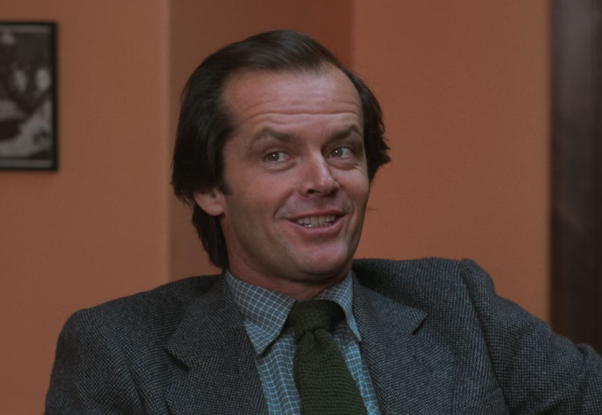
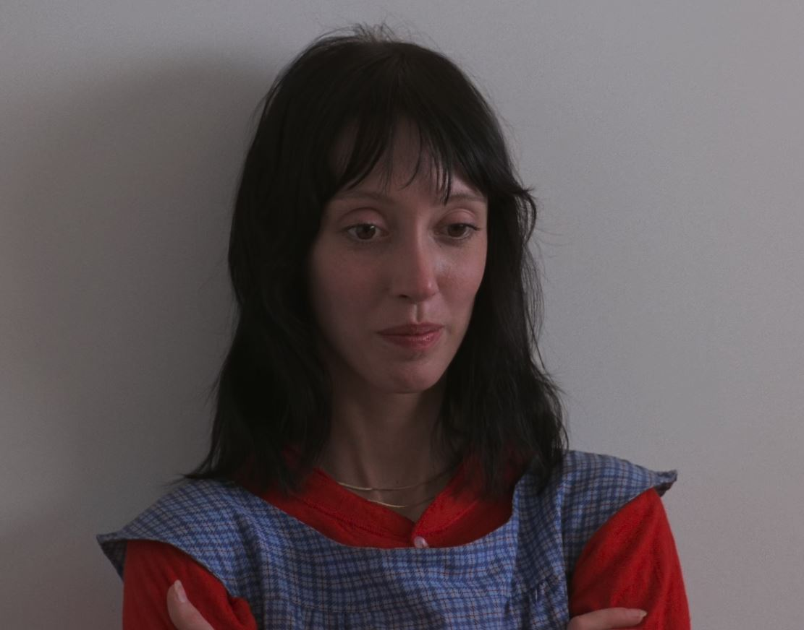
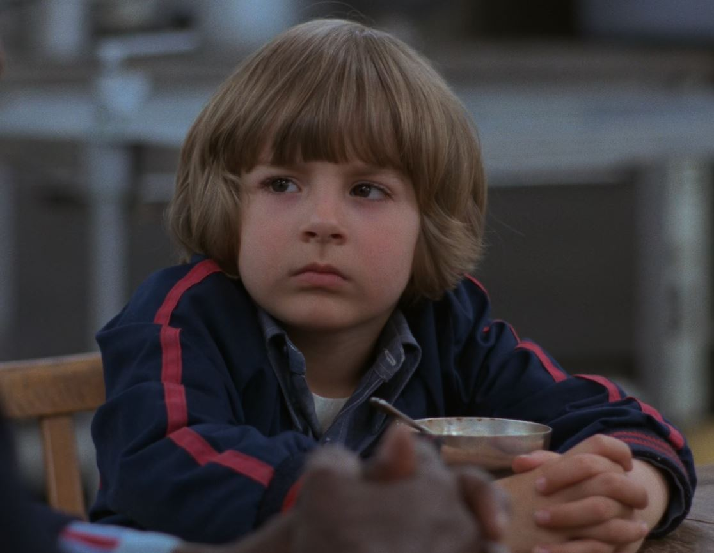
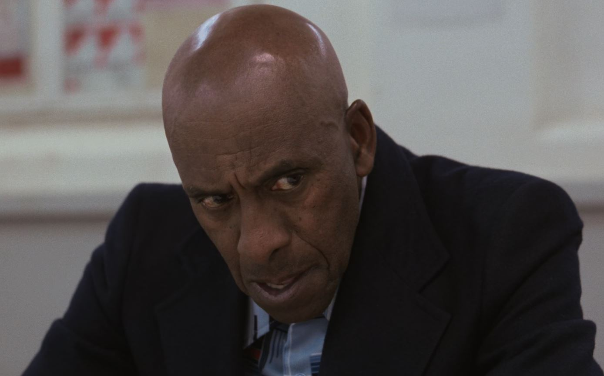

JACK NICHOLSON
Jack Nicholson is an American actor and filmmaker widely regarded as one of the greatest performers
in
cinema history. He was born on April 22, 1937, in New Jersey. Nicholson began his acting career in
the
late 1950s and gradually became one of Hollywood's most recognizable stars. He gained international
fame
through films such as One Flew Over the Cuckoo's Nest, Chinatown, and The Shining. In The Shining,
he
portrayed Jack Torrance, a writer who slowly descends into madness while isolated in the Overlook
Hotel.
His performance is remembered for its intensity, unpredictability, and iconic facial expressions.
The
famous line "Here's Johnny!" became one of the most quoted moments in film history. Throughout his
career, Nicholson received numerous awards and nominations. He won multiple Academy Awards and
established himself as a legendary figure in American cinema. His portrayal of Jack Torrance remains
one
of the most influential performances in the horror genre.
Jack Nicholson
IMDb Profile

SHELLEY DUVALL
Shelley Duvall was an American actress known for her unique screen presence and memorable
performances.
She was born on July 7, 1949, in Texas. Duvall began her film career after being discovered by
director
Robert Altman. She appeared in several of Altman's productions before gaining worldwide recognition.
In
The Shining, she played Wendy Torrance, the wife of Jack Torrance and mother of Danny. Her character
spends much of the film trying to protect her son from increasing danger. Duvall's performance
conveys
fear, vulnerability, and determination under extreme circumstances. The role became one of the most
discussed performances in horror cinema. Despite mixed reactions at the time of release, her work
has
been re-evaluated positively by many critics and fans. Today, Shelley Duvall is remembered as an
important part of one of the most influential horror films ever made.
Shelley
Duvall IMDb Profile

DANNY LLOYD
Danny Lloyd is an American former child actor best known for playing Danny Torrance in The Shining.
He
was born on October 13, 1972, in Illinois. Lloyd was selected for the role at a very young age and
delivered one of the most memorable child performances in horror film history. Danny Torrance is a
young
boy with psychic abilities known as "the shining." Throughout the film, he experiences disturbing
visions connected to the Overlook Hotel. His interactions with his imaginary friend Tony became some
of
the movie's most recognizable moments. Unlike many child actors, Lloyd did not continue a major
acting
career after the film. He later pursued a career in education. Despite appearing in only a few
productions, his role in The Shining remains widely recognized. His performance continues to be
appreciated by horror fans around the world.
Danny
Lloyd IMDb Profile

SCATMAN CROTHERS
Scatman Crothers was an American actor, musician, and voice artist. He was born on May 23, 1910, in
Indiana. Before becoming widely known as an actor, he built a successful career as a musician and
entertainer. Crothers appeared in numerous television shows and films throughout his long career. In
The
Shining, he portrayed Dick Hallorann, the Overlook Hotel's head cook. Hallorann possesses the same
psychic gift known as "the shining" that Danny Torrance has. Recognizing Danny's abilities, he forms
a
special connection with the boy early in the story. As the events at the hotel become increasingly
dangerous, Hallorann attempts to help the Torrance family. His character serves as one of the film's
most compassionate and heroic figures. Scatman Crothers' performance remains an important part of
the
enduring legacy of The Shining.
Scatman
Crothers IMDb Profile